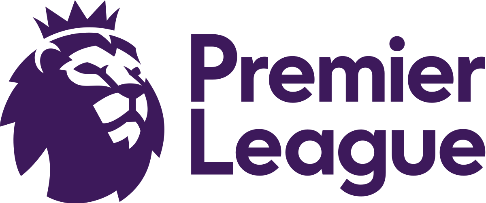

Adalah liga sepak bola profesional teratas di Inggris. Ini adalah salah satu yang paling populer dan liga sepak bola kompetitif di dunia. Liga ini menampilkan 20 klub yang bersaing satu sama lain sepanjang musim, dan memiliki sejarah yang kaya akan pemain-pemain berbakat, persaingan yang intens, dan tak terlupakan momen.
50 klub telah bermain di Liga Premier sejak dimulainya pada tahun 1992, hingga dan termasuk musim 2022-23
| Club | Championships |
|---|---|
| Manchester United | 13 |
| Liverpool | 19 |
| Arsenal | 3 |
| Manchester City | 4 |

| Player | Years | Goals |
|---|---|---|
| Alan Shearer | 1992-2006 | 260 |
| Harry Kane | 2012-2023 | 213 |
The Premier League Golden Boot diberikan setiap musim kepada pencetak gol terbanyak di divisi tersebut. Mantan Blackburn Rovers dan striker Newcastle United Alan Shearer memegang rekor gol terbanyak di Premier League dengan 260 gol. Tiga puluh tiga pemain telah mencapai angka 100 gol. Sejak musim Liga Premier pertama pada 1992–93, 23 pemain dari 11 klub telah memenangkan atau berbagi gelar pencetak gol terbanyak. Thierry Henry memenangkan skor keseluruhan keempatnya gelar dengan mencetak 27 gol di musim 2005-06. Erling Haaland memegang rekor gol terbanyak di Liga Premier Musim liga (38 pertandingan) dengan 36 gol per 15 Mei 2023.
| Player | Club | Assists |
|---|---|---|
| Ryan Giggs | Manchester United | 162 |
| Cesc Fàbregas | Arsenal | 111 |
Ryan Giggs dari Manchester United memegang rekor mencetak gol dalam musim berturut-turut, setelah mencetak gol di musim tersebut 21 musim pertama liga. Giggs juga memegang rekor assist terbanyak di Premier League, dengan 162 assist.